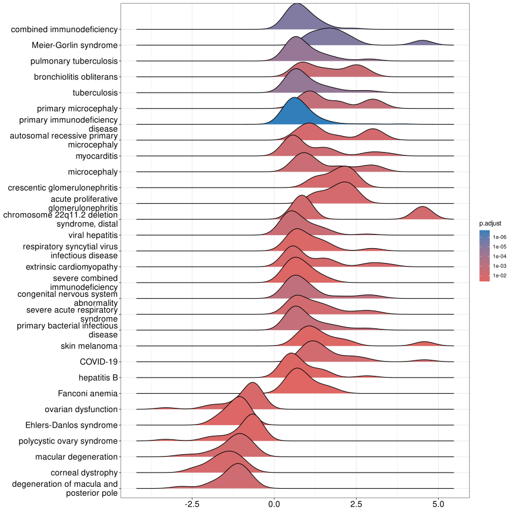
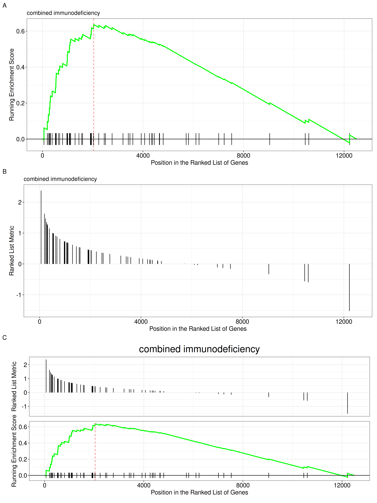
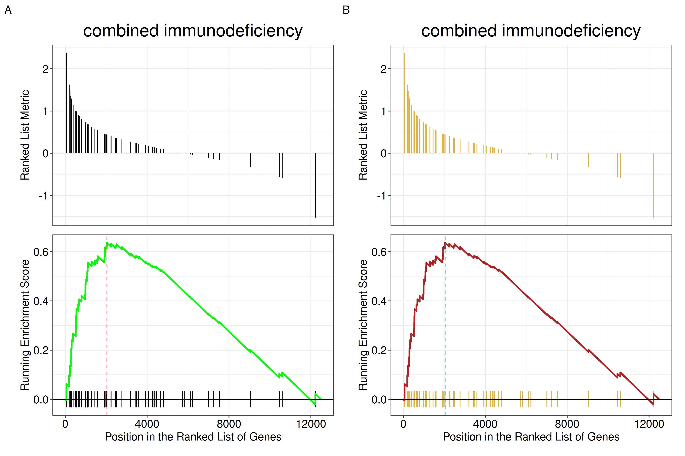
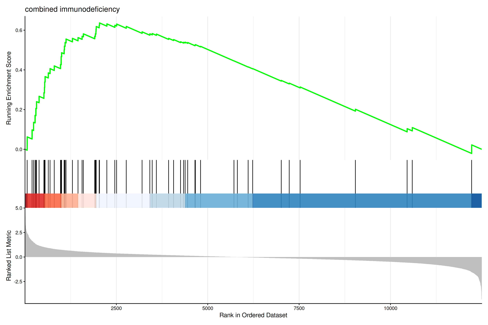
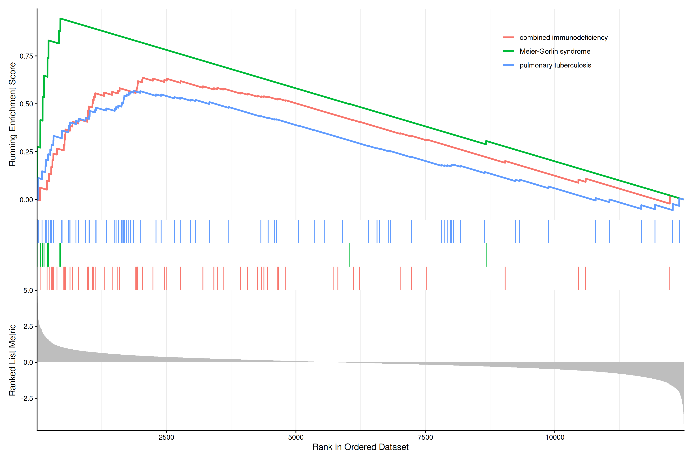
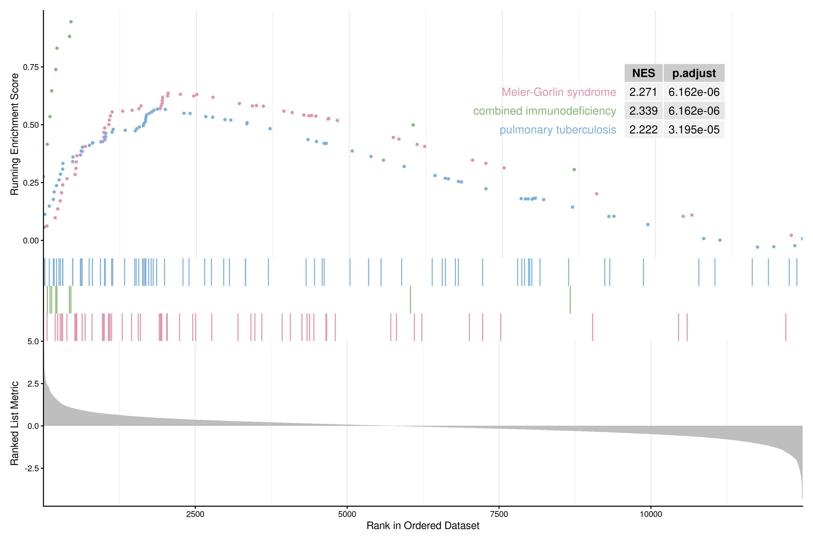
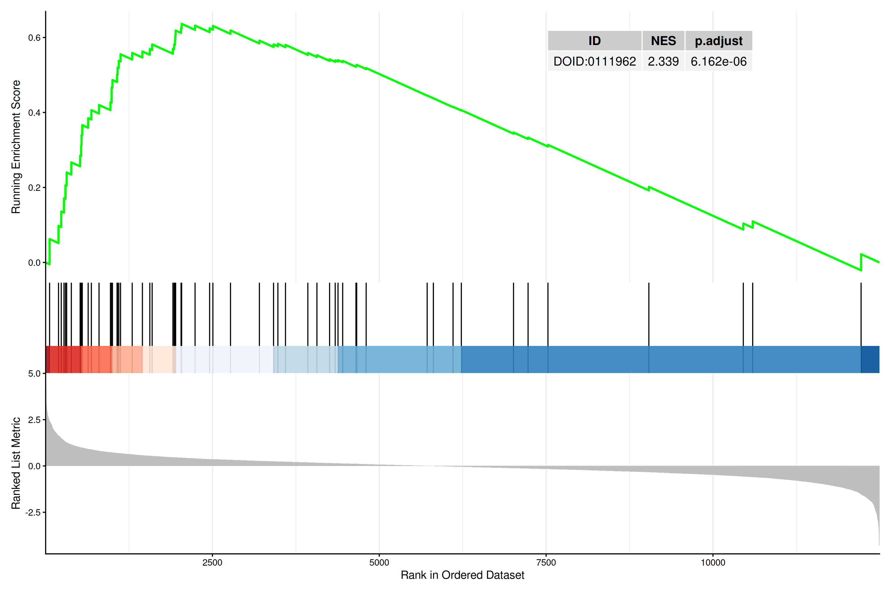
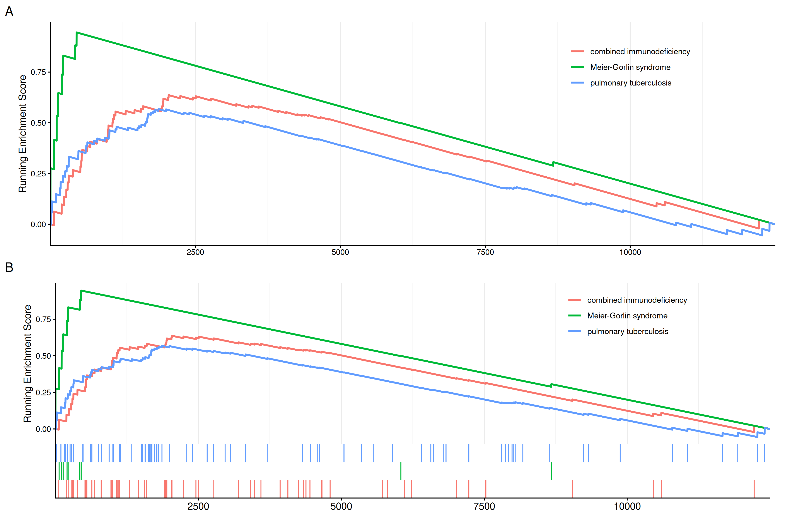
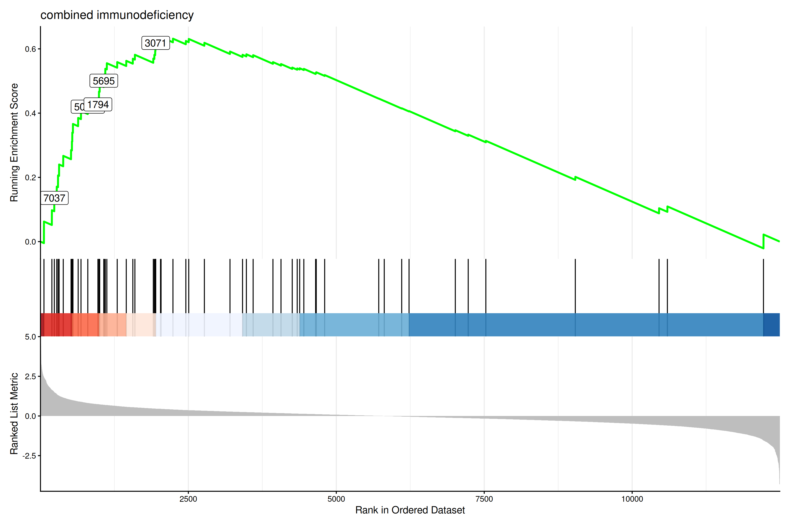
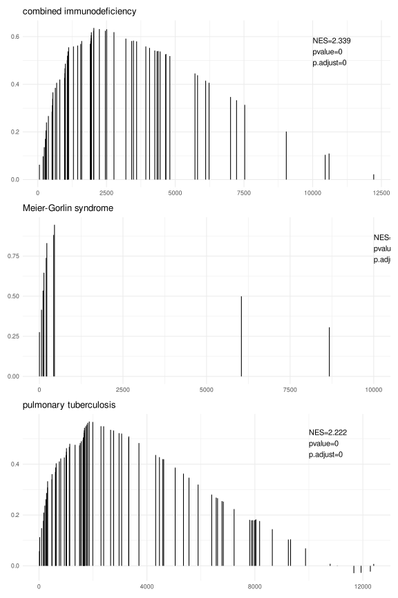

library(DOSE)
data(geneList, package = "DOSE")
de <- names(geneList)[abs(geneList) > 2]
edo <- enrichDO(de)
edo2 <- gseDO(geneList)29 GSEA and distribution views
| Aspect | GSEA views |
|---|---|
| Question | Where is the enrichment signal located, how is it distributed, and which genes drive it? |
| Input | A gseaResult or compatible ranked result with the original named statistic vector and core-enrichment information. |
| Functions | gseaplot(), gseaplot2(), ridgeplot(), gsearank(), and distribution/label helpers. |
| Output | Enrichment curves, rank views, ridgelines, and gene-level distribution figures. |
| Limitations | Direction depends on ranking sign; curve shape is not an effect-size estimate by itself. Record ranking construction, gene-set size filters, and database release. |
Use these figures after checking the ranking and leading-edge genes; continue to result reading before writing a pathway narrative.
29.1 ridgeline plot for expression distribution of GSEA result
The ridgeplot will visualize expression distributions of core enriched genes for GSEA enriched categories. It helps users to interpret up/down-regulated pathways.
The stat parameter controls the geometry used to summarize the distributions. By default, ridgeplot() uses stat = "density_ridges", and users can also set stat = "binline" to display binned profiles instead.
ridgeplot(edo2)
ridgeplot(edo2, stat = "binline")29.2 running score and preranked list of GSEA result
Running score and preranked list are traditional methods for visualizing GSEA result. The enrichplot package supports both of them to visualize the distribution of the gene set and the enrichment score.
p1 <- gseaplot(edo2, geneSetID = 1, by = "runningScore", title = edo2$Description[1])
p2 <- gseaplot(edo2, geneSetID = 1, by = "preranked", title = edo2$Description[1])
p3 <- gseaplot(edo2, geneSetID = 1, title = edo2$Description[1])
plot_list(p1, p2, p3, ncol=1, tag_levels='A')
by = "runningScore"). by = "runningScore" (A), by = "preranked" (B), default (C)
The gseaplot function also allows users to customize the colors of the running score line and the rank line.
p_default <- gseaplot(edo2, geneSetID = 1, title = edo2$Description[1])
p_custom <- gseaplot(edo2, geneSetID = 1, color="#DAB546", color.line='firebrick',
color.vline="steelblue", title = edo2$Description[1])
plot_list(p_default, p_custom, ncol=2, tag_levels='A')
color, color.line, and color.vline.
29.3 Running-score and ranked-list views
Another method to plot GSEA result is the gseaplot2 function:
Reading the three panels. gseaplot2() stacks three panels that share the same x-axis, which is the position in the ranked gene list (not a gene identifier):
- Running Enrichment Score — the running-sum statistic. It rises when a gene in the set is encountered and falls otherwise; the enrichment score is its maximum deviation from zero (marked by the dashed vertical line).
- The middle band — the black vertical ticks are the positions of the genes in the set. The coloured rectangles behind them divide the hits (not the ranked list) into equal-count bins, running from the top of the list (red) to the bottom (blue); their widths therefore encode local hit density, with narrow rectangles indicating a region where the set’s genes are packed tightly, and the final rectangle extending to the end of the list. A gene set enriched at the top shows narrow red rectangles crowded on the left.
- Ranked List Metric — the ranking statistic itself (e.g. the log fold change or the signed correlation), with the gene set members drawn as vertical segments.
The coloured rectangles used to be wrong — the bug is fixed in this build. Earlier versions computed the hit bins from a cumulative count taken from the bottom of the ranked list and never reversed it, so the gradient came out backwards: for a strongly enriched gene set nearly all hits collapsed into a single rectangle and the rest were empty. That is the bug behind enrichplot#20 and enrichplot#221. It is fixed in the development version of enrichplot, which is the version this book builds against: measured on a gene set with 40 hits in a 1000-gene list, all 9 rectangles are populated and the largest holds 15% of the hits, instead of one rectangle holding all of them. On an older release the master branch still carries the old order, so there the red/blue split is not a faithful picture of where the hits are; if the rectangles look collapsed, that is why. The coloured rectangles are in any case a property of gseaplot2(), not of the GSEA method — the original Broad GSEA plots colour the ranked-list-metric panel by the sign of the metric instead, so the two conventions do not agree either.
gseaplot2(edo2, geneSetID = 1, title = edo2$Description[1])
The gseaplot2 also supports multile gene sets to be displayed on the same figure:
gseaplot2(edo2, geneSetID = 1:3)
User can also displaying the pvalue table on the plot via pvalue_table parameter:
gseaplot2(edo2, geneSetID = 1:3, pvalue_table = TRUE,
color = c("#E495A5", "#86B875", "#7DB0DD"), ES_geom = "dot")
The pvalue_table can be customized using the following parameters:
pvalue_table_rownamesto specify row names of the table (if NULL, no row names will be displayed)pvalue_table_columnsto specify column names of the table
gseaplot2(edo2, geneSetID = 1, pvalue_table = TRUE,
pvalue_table_rownames = NULL,
pvalue_table_columns = c("ID", "NES", "p.adjust"))
User can specify subplots to only display a subset of plots:
p1 <- gseaplot2(edo2, geneSetID = 1:3, subplots = 1)
p2 <- gseaplot2(edo2, geneSetID = 1:3, subplots = 1:2)
plot_list(p1, p2, ncol=1, tag_levels = 'A')
subplots = 1 (A),subplots = 1:2 (B)
29.3.1 Labeling genes in GSEA plot
Users can use geom_gsea_gene() to label specific genes in the GSEA plot.
library(ggplot2)
library(ggrepel)
# Get gene set ID
id <- edo2$ID[1]
# Randomly select genes to label
set.seed(123)
genes <- sample(edo2[[id]], 5)
# Label genes on gseaplot2
p <- gseaplot2(edo2, geneSetID = 1, title = edo2$Description[1])
# Add geom_gsea_gene layer to the first subplot (running score)
p[[1]] <- p[[1]] + geom_gsea_gene(genes, geom=geom_label)
p
If users prefer to label with gene symbols, they can convert the gene IDs to symbols (e.g., using setReadable) before plotting.
library(clusterProfiler)
# Assuming org.Hs.eg.db is available
if (require("org.Hs.eg.db")) {
edo2_symbol <- setReadable(edo2, 'org.Hs.eg.db', 'ENTREZID')
id <- edo2_symbol$ID[1]
genes_symbol <- sample(edo2_symbol[[id]], 5)
p_symbol <- gseaplot2(edo2_symbol, geneSetID = 1, title = edo2_symbol$Description[1])
p_symbol[[1]] <- p_symbol[[1]] + geom_gsea_gene(genes_symbol, geom=geom_text_repel)
p_symbol
}The gsearank function plot the ranked list of genes belong to the specific gene set.
gsearank(edo2, 1, title = edo2[1, "Description"])
Multiple gene sets can be aligned using cowplot:
library(ggplot2)
pp <- lapply(1:3, function(i) {
anno <- edo2[i, c("NES", "pvalue", "p.adjust")]
lab <- paste0(names(anno), "=", round(anno, 3), collapse="\n")
gsearank(edo2, i, edo2[i, 2]) + xlab(NULL) +ylab(NULL) +
annotate("text", 10000, edo2[i, "enrichmentScore"] * .75, label = lab, hjust=0, vjust=0)
})
plot_list(gglist=pp, ncol=1)
29.3.2 Extracting data from gsearank plot
The gsearank function can also output the data used for plotting by setting output = "table". This allows users to inspect the running score and other metrics for genes in the gene set.
gsearank(edo2, 1, output = "table") |> head() gene rank in geneList running ES core enrichment
1 9837 60 0.06243348 YES
2 1503 194 0.09767718 YES
3 7037 235 0.13600863 YES
4 3932 276 0.17107219 YES
5 3559 298 0.20599919 YES
6 51311 316 0.24005196 YESUsers can also merge this table with gene information (e.g. Symbol) using bitr or other methods.
rank_table <- gsearank(edo2, 1, output = "table")
# Assuming 'gene' column contains Entrez IDs
if (require("org.Hs.eg.db") && require("clusterProfiler")) {
gene_info <- bitr(rank_table$gene, fromType="ENTREZID", toType="SYMBOL", OrgDb="org.Hs.eg.db")
rank_table_symbol <- merge(rank_table, gene_info, by.x="gene", by.y="ENTREZID")
head(rank_table_symbol)
}29.4 Next steps
- For common term summaries, see summary plots.
- For leading-edge interpretation, see the recipes.